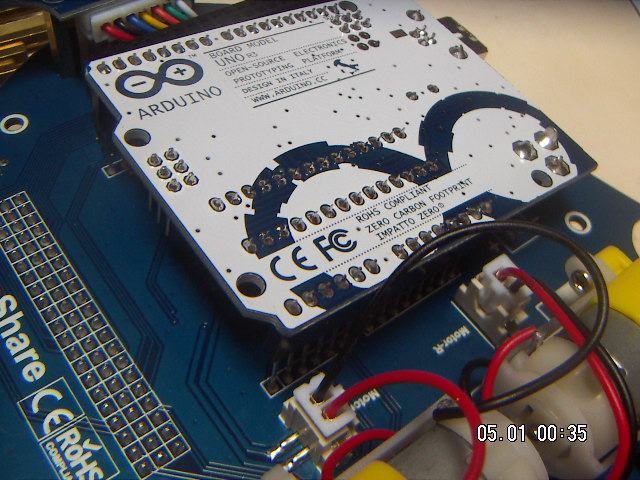
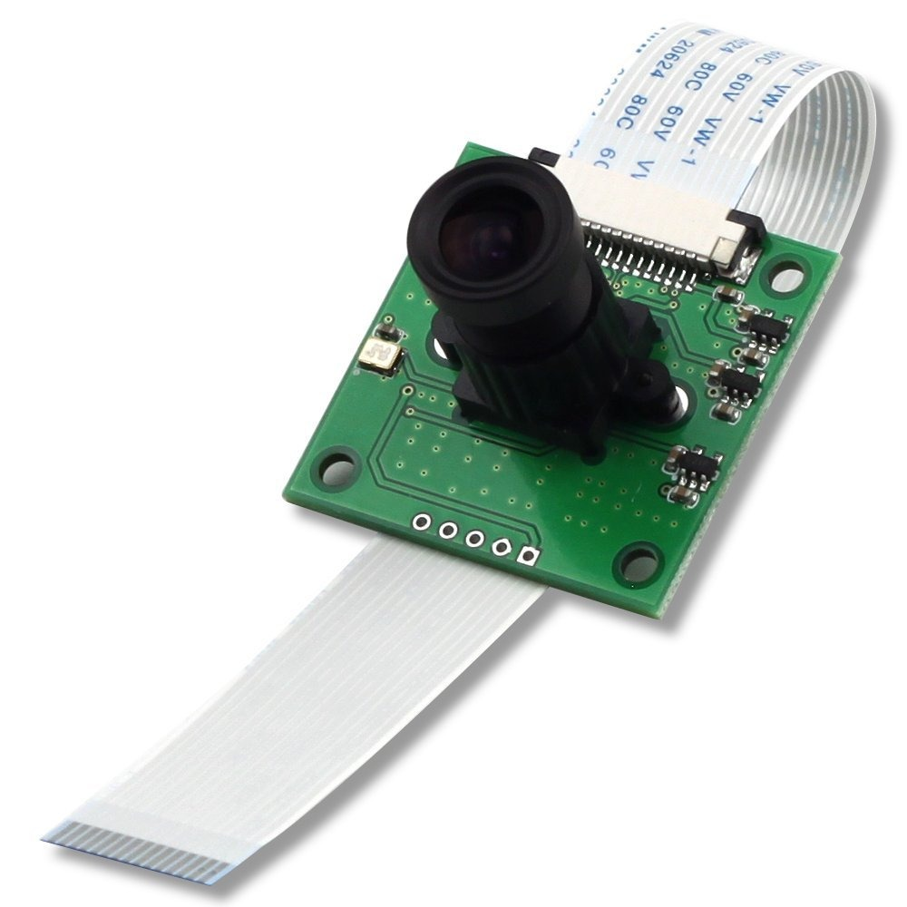

DIY Do It Yourself
Este robot es delicado y difícil de montar, hemos elaborada este pequeña guia de montaje o puedes hacer caso a la guia oficial que te puedes descargar aquí
Ojo, que quede bien claro que nosotros estamos para ayudarte en tu formación, no somos comerciales de este robot. O sea, ésto mejor que no:

Pero te queremos animar:
Nomenclatura:
- Parte delantera: La que tiene la cámara.
- Parte trasera la que tiene el siguelíneas.
El Paquete de piezas
Encontramos todas estas piezas, destacamos:
- Placa de raspberry con microSD, pincho adaptador y fuente de alimentación (no fotografiado)
- Tornillería abundante algunos tornillos son minúsculos.

Vamos a por ello (Advertencia: empieza si tienes tiempo por delante):
Los motores
Ponemos primero los dos soportes:
Atornillamos el motor con los tornillos largos

conectamos el motor

repetimos los mismos pasos con el otro motor.
Medidor de velocidad
Ponemos la rueda de agujeros para el medidor de velocidad:
Tiene que ir en este agujero van muy ajustados luego no es necesario atornillarlos. ACONSEJAMOS NO METERLOS AÚN sino después de colocar el brazo robótico
conectamos el sensor:
con la placa
Sensor de siguelíneas
Hay tres tipos de barras, elegimos siempre las largas (no sé para que sirven las pequeñas)
atornillamos en la parte trasera del robot
Conectamos
y aún no atornillamos, tiene que ir atornillado al final, cuando pongamos la tapa inferior. El sensor tiene que estar atrapado con el tornillo entre la barra y la tapa inferior. Esta foto es para que veas cómo tiene que quedar al final, pero aún no lo hagas:
Sensor distancia IR
Colocamos un tornillo de plástico que servirá de arandela aislante pues si no se hace, al atornillar hace un cortocircuito y el sensor no funciona bien:
utilizando los tornillos un poco más largos:
Atornillamos en la parte delantera en los agujeros extremos :
Conectamos
Y por abajo también:
Arduino (opcional)
Si decidimos conectar un Arduino ahora es el momento:

Raspberry
Antes de colocarlo:
Pasamos el cable de la cámara por la ranura de la placa del robot para que salga al exterior:
Ponemos el cable de la cámara, levantamos el plástico negro sin arrancarlo:
Y colocamos el cable, con el lado azul tal como está en la foto y volvemos a apretar el plástico negro para que fije el cable a la Raspberry:
Ahora ya podemos colocar la Raspberry en el zócalo de los GPIO: (si además tienes puesto un Arduino, queda el Arduino entre la Raspberry y la placa).
Aprovechamos y ponemos las barras largas para proteger los distintos elementos (Las 2 barras de la parte delantera pueden ir en esa posición o en los otros dos agujeros más adelantados).

Brazo robótico
Esta parte es la más difícil !!!
De momento algo sencillote: Conectar los servos CABLE MARRÓN A GND pasando los cables por el mismo agujero que están los cables de conexión del sensor de velocidad y el de proximidad:
El servo de abajo tiene que colocarse en esta pieza
entra ajustado pero entra:
colocamos la otra pieza:
Utilizamos los tornillos largos pero no los más largos y estrechos sino este:
Atornillamos:
Para el servo de arriba utilizamos un tornillo de punta pequeño:
Lo atornillamos en los dos lados del servo:
Y lo colocamos con la otra pieza:

CHAPUZA ahora vemos que la pieza de brazo del servo no se ajusta al hueco
La palabra "chapuza" es típico española, y también estos cuchillos albaceteños:

Los españoles estamos entrenados a resolver situaciones chapuzas:
El tornillo es uno en punta con arandela soldada:
CHAPUZA2 la parte que tiene que unir el servo de abajo con la plataforma de la placa tiene que ser con un brazo de servo QUE NO ENTRA:
Pero los maños no nos rendimos:
Esto no sé si está en los libros de ingeniería !!
Aún así hay que rebajar un poco más en los lados para que entre bien el brazo del servo blanco, puedes ver en la foto como con el cuchillo se ha rebajado un poco más a los lados para que la pieza blanca esté lo más prieta a la negra:.
Bien atornillado por la parte reversa (Nota: tendrás que agrandar los agujeros de la pieza blanca, un truco es utilizar un tornillo de punta, atornillarlo y destornillarlo):
Utilizando los tornillos finos y cortos:
Es un buen momento para colocar la cámara. Levantamos la pieza negra sin arrancarla:
Ponemos el cable con el lado azul mirando hacia la cámara como en la foto y volvemos a colocar la pieza negra:

Truco: Al encender el robot, tiene que encenderse un led rojo de la cámara. Si no es así es que has conectado la cinta mal.
CHAPUZA3 Mete la cámara a presión y verás: ¡¡ Es más grande la cámara que el soporte !!. Queda torcido, no es muy estético pero está bien sujeto:
Ahora viene el PUNTO DÉBIL DE ESTE ROBOT la unión del brazo robótico con la placa. Ponemos el servo de abajo con la plataforma:
Utilizaremos un tornillo con arandela soldada:
Y bien apretado pero sin reventar el servo, ojo:
Ahora utilizaremos los tornillos más largos con tuerca que lo utilizaremos de arandela de plástico y tuerca

CHAPUZA4: ¿Por qué utilizar la arandela de plástico? porque si no se utiliza, las tuercas hacen cortocircuitos con las soldaduras de la placa, luego necesitamos levantar un poco la plataforma del brazo robótico de la placa:
Atornillamos los 4 (por eso decíamos que no había que poner los sensores de velocidad aún) :
Y ponemos las 4 tuercas por la parte de atrás bien prietas OJO SE NECESITA MAÑA abstenerse los que no tengan uñas y dedos gordos:
Ahora ya podemos colocar los sensores de velocidad, que no hace falta atornillarlos pues entran muy ajustados y prietos:
Tiene que quedar que vean bien los agujeros de las ruedas:
Ruedas
Ponemos la rueda loca en la parte trasera:
Atornillamos
Ponemos las ruedas traseras, las pilas:
Acuérdate de poner bien los jumpers amarillos !!:

Y fin !! ha sido difícil pero piensa que en la realidad cuesta más :

Alphabot por varios autores bajo licencia Creative Commons Reconocimiento-NoComercial-CompartirIgual 4.0 Internacional License.